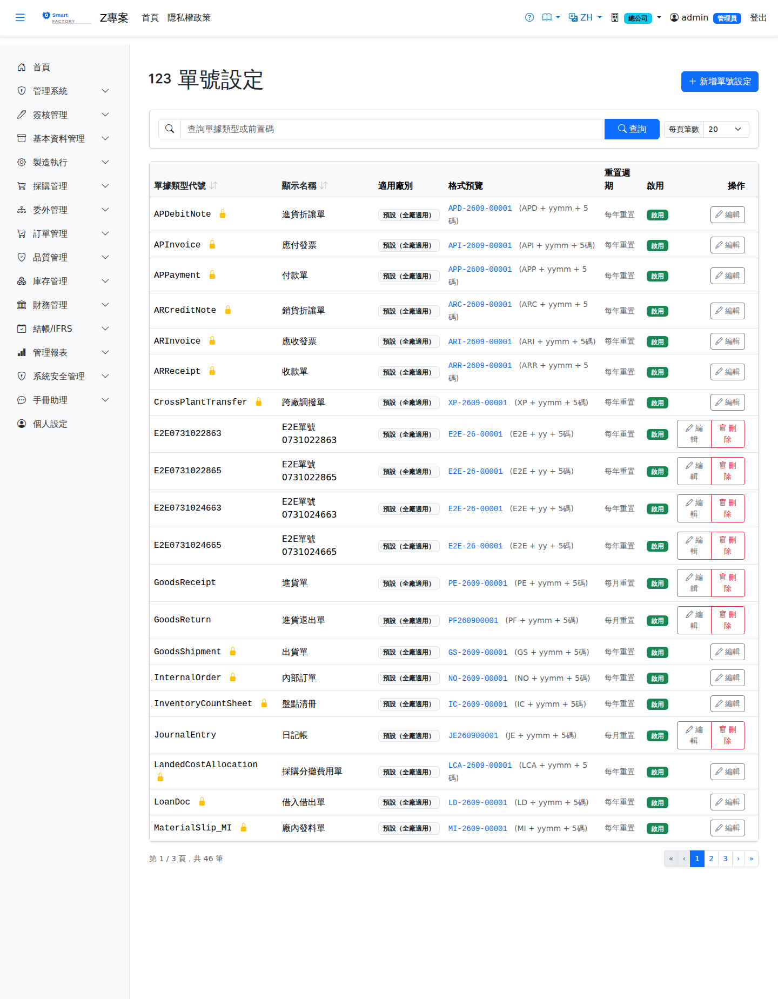

單號設定Doc Number Config
單號設定定義各類單據（請購單、採購單、工單等）的自動編號格式，包含前綴碼、日期格式與流水號長度。系統在新增單據時依此規則自動產生唯一單號。Doc number config defines the automatic numbering format of each document type (purchase request, purchase order, work order, …), including prefix, date format and sequence length. The system generates a unique number from these rules whenever a document is created.

欄位說明Field reference
| 欄位名稱Field | 必填Required | 說明Guide |
|---|---|---|
| 單據類型Document Type | 必填Required | 對應的單據種類（如 PUR = 採購單、REQ = 請購單）；系統型別不可修改The document type it belongs to (e.g. PUR = purchase order, REQ = purchase request); system types cannot be changed |
| 前綴碼Prefix | 單號開頭固定文字（例：PO、REQ、WO）Fixed text at the start of the number (e.g. PO, REQ, WO) | |
| 日期格式Date Format | 插入於前綴後的日期格式：無、YYYY、YYYYMM、YYYYMMDDDate format inserted after the prefix: none, YYYY, YYYYMM, YYYYMMDD | |
| 流水號長度Sequence Length | 必填Required | 流水號補零至幾位（例：4 = 0001–9999）Number of digits the sequence is padded to (e.g. 4 = 0001–9999) |
| 流水號重置週期Sequence Reset Cycle | 無、每年重置、每月重置（依日期格式對應）None, yearly reset, monthly reset (matching the date format) | |
| 是否系統型別System Type | 系統預設的單據類型（唯讀，無法刪除）Document type shipped with the system (read-only, cannot be deleted) | |
| 是否啟用Active | 停用後該類型不會自動編號Once inactive, this type no longer issues numbers automatically |
單號預覽Number Preview
編輯單號設定時，右側「預覽」區塊會即時顯示依目前設定產生的範例單號格式。例如：While editing a doc number config, the "Preview" box on the right shows a live sample of the number produced by the current settings. For example:
| 前綴Prefix | 日期格式Date Format | 流水號長度Sequence Length | 範例單號Sample number |
|---|---|---|---|
| PO | YYYYMM | 4 | PO2026060001 |
| WO | YYYYMMDD | 3 | WO20260601001 |
| REQ | YYYY | 5 | REQ202600001 |
| CTR | 無None | 6 | CTR000001 |
操作步驟Steps
修改現有設定Editing an existing setting
重置週期改過之後為何不會重號Why numbers are never reused after the reset cycle changes
流水號是依「期別」分別記數的：每年重置記在年期別（如The sequence is counted per period: a yearly reset counts within the year period (e.g. 2026），每月重置記在月期別（如), a monthly reset counts within the month period (such as 202607）。
把重置週期改掉會換一條期別記數，新的那條從 1 起跳，但單號印出的日期段（如). Changing the reset cycle switches to another period counter that starts from 1, but the date part printed in the number (such as 2607）不會跟著變，
於是可能重新發出已經用過的號碼——存檔時就會出現) does not change with it, so a number that has already been used could be issued again — and saving it then produces 單號重複Duplicate document numbers或 or 「已存在過帳紀錄，禁止重複過帳」"A posting record already exists; duplicate posting is not allowed"之類的錯誤。 and similar errors.
- 取號時自動接續continues automatically when numbers are issued：系統發號時會比對「同一張單據日期」在各種重置週期下的期別記數，取其中最大值往後編。 因此不論週期是何時、用什麼方式改的（本畫面修改、直接改資料庫、還原備份），都不會再發出舊號碼，只會: when issuing a number the system compares the period counters of the same document date under every reset cycle and continues from the largest one. So however and whenever the cycle was changed (on this screen, directly in the database, or by restoring a backup), an old number is never issued again — at most there is 跳號a gap in the numbering。
- 正常的跨年／跨月重置不受影響normal year-end and month-end resets are unaffected：只比對同一張單據日期推得的期別，2027 年不會看到 2026 年的號碼，該重置時照樣從 1 起編。: only the period counters derived from the same document date are compared, so 2027 never sees a 2026 number and the sequence still restarts at 1 when it should.
- 本畫面修改重置週期時When the reset cycle is changed on this screen會另外先做一次序號校準，與存檔在同一筆交易內完成。 the system first realigns the sequence, within the same transaction as the save.
- 因此改週期後so after the cycle is changed 號碼可能出現跳號the numbering may show gaps（如 00002～00006 被略過），這是為了避免重號而刻意跳過，屬正常現象。 (for example 00002–00006 are skipped). The gap is deliberate — it prevents duplicates — and is normal.